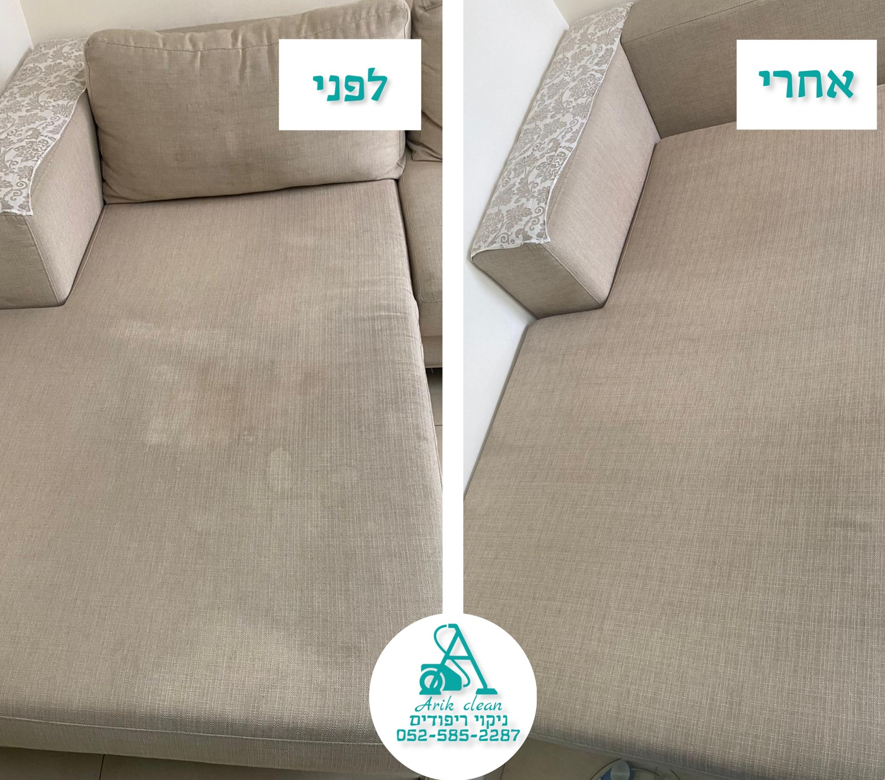

הספות שלנו נמצאות בלב ליבו של הבית, עליהן אנחנו מבלים את רוב השעות כשאנחנו נמצאים בבית.
אנחנו יודעים שלא הייתם רוצים ספה מלוכלכת באמצע הסלון ובשביל זה אנחנו פה.
ישיבה ממושכת על הספה לאורך זמן יוצרת כתמים קשים ולכלוך שלא ניתן להוציא בניקוי ביתי הכתמים
יוצרים מראה ישם ומקומת של הבד.
ניקוי ספות חשוב למען שמירה על ההיגיינה והחיטוי ולא רק למטרת הניקיון והאסטטיקה.
מומלץ לאנשים עם בעיות בדרכי הנשימה, למשפחות עם ילדים ובעלי חיים
בארקלין משתמשים בשיטה המתקדמת ביותר לניקוי ספות.
החומרים שלנו היפואלרגניים וידידותיים לסביבה וכמובן משתמשים במחשוב עוצמתי ומתקדם ביותר בשוק
שלבי ניקוי הספה:
1. זיהוי הבד והכתמים המופיעים עליו לכל בד תגובה משלו וחשוב להתאים את החומר לסוג הבד
2. ריסוס מקדים של כל הספה עם חומר ומים
3. שפשוף החומר עם מברשת יעודית בעלת סיבים המתאימים לסוג הבד
4.
הזרקה ויניקה בעמצאות מכשור המתקדם בשוק. חשוב להקפיד על שאיבה טובה על מנת לשאוב טוב את החומר והמים וכדי שהספה תתייבש

ניקוי ריפודי רכב
הרכב שלנו משמש אותנו לכל כך הרבה דברים, הגעה לעבודה,
הסעות הילדים מהמסגרות, נסיעות משפחתיות ובילויים.
חשוב שיהיה לנו נקי ונוח ברכב בדיוק כמו שאנחנו מרגישים בביתנו.
אנחנו אוכלים ושותים ברכב, אנשים נכנסים ויוצאים מהרכב ועל שטח כה קטן
מתקיימת הרבה פעילות אשר גורמת לריפוד הרכב להתלכלך, דבר הדורש תחזוקה
שוטפת וקבועה.
אנחנו באריקלין מגיעים עד בית הלקוח ודואגים לנקיון ריפודי הרכב.
מנטרלים מריפודי הרכב ריחות רעים, כתמים, עובש, שיערות בע"ח וכו'.
קיימים סוגים שונים של ריפודי רכב- בד, עור או חומר סיננטי.
באריקלין יודעים להתאים את החומר המתאים עבור הריפוד הספציפי ברכב.
משתמשים בחומרים היפואלרגנים וידידותיים לסביבה. וכמובן במכשור המתקדם
והעוצמתי בשוק.
ניקוי מזרנים
ניקוי מזרן חשוב מאוד מכיוון שהוא אחד הפריטים שאנחנו הכי משתמשים בו בבית ובדרך כלל לא ממש
דואגים לתחזוקה ונקיון שלו.
המזרן סופג אליו הרבה חיידקים ואבק במשך הזמן, שאנחנו שוכבים עליו ונושמים אותו.
כמו כן, הגוף מפריש זיעה בזמן השינה אשר יוצר כתמים שעם הזמן נהיים קשים להסרה.
באריקלין תוכלו לקבל ניקוי מזרון ברמה הגבוהה ביותר, אנו מתחייבים לניקוי וחיטוי יסודי של המזרון.
ניקוי זיעה, כתמים, והפרשות אדם/בע"ח.
אנו מנקים את כל סוגי וגדלי המזרונים, משתמשים בחומרים היפואלרגניים ידידותיים לסביבה וכמובן,
במכשור העוצמתי והמתקדם בשוק.
אז למה לזרוק אם אפשר לחדש?! בפעם הבאה שהמזרן מתלכלך התקשרו אלינו
מקסימום תוצאות במינימום זמן
ניקוי שטיחים
שטיח הוא פריט נוי אשר צובר המון אבק ולכלוך בבית.
השטיח נמצא במרכז הסלון או החדר וסופח אליו אבק, בקטריות ולכלוך רב
שלעיתים שואב ביתי לא מצליח להסיר במלואו.
אנו דורכים עליו, יושבים עליו ונוגעים בו וזו, יכולה להיות קרקע פוריה
להיווצרות חיידקים.
תחזוק ונקיון מקצועי אחת למס חודשים יכול למנוע מחלות ואלרגיות לאנשי
הבית ולהאריך את חיי השטיח ולמנוע בלאי.
ניקוי כיסאות פינת אוכל וכורסאות
ישיבה ממושכת על הכורסא/כיסא יוצרת
מראה מלוכלך ומקומט של ריפודי הבד.
כורסאות וכיסאות צוברים אבק חיידקים ולכלוך.
בעיקר כיסאות פינת אוכל אשר יכולים להתלכלך כתוצאה מאוכל שנופל
עליהם.
באריקלין משתמשים במכשור העוצמתי והמתקדם בשוק תוך שימוש
בחומרים היפולארגניים ידידותיים לסביבה.
אנו מתחייבים להסיר את הלכלוך, האבק והחיידקים.
לחדש לכם את הכורסא והכיסאות עם מקסימום תוצאות במינימום זמן.
.png)
.png)